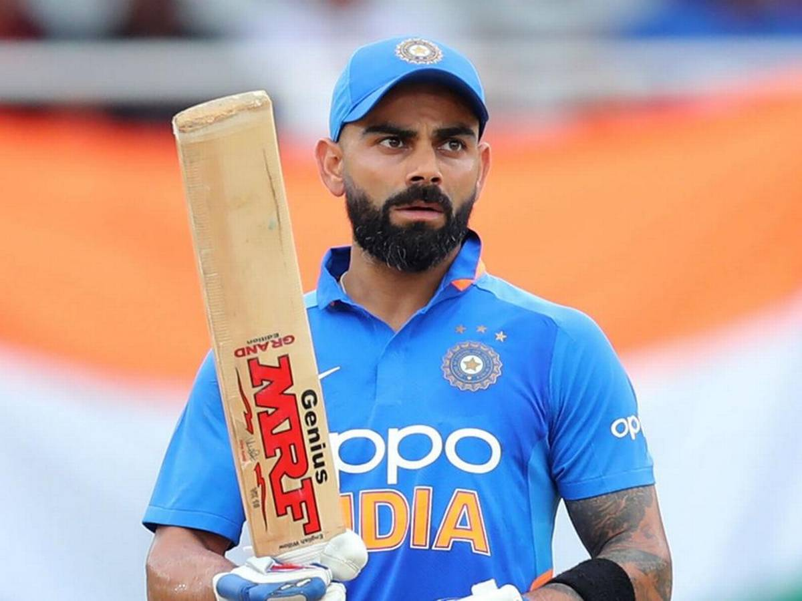
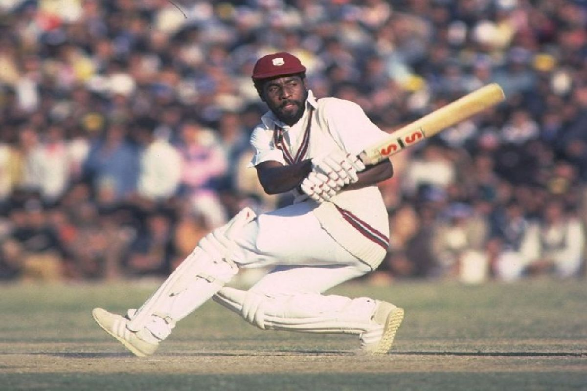
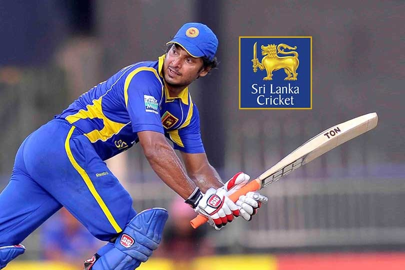

5 Best Cricketers of all Time
1.Sir Donald Bradman-Australia
Sir Donald George Bradman, AC (27 August 1908 to 25 February 2001), nicknamed "The Don", was an Australian international cricketer, widely acknowledged as the greatest batsman of all time.Bradman's career Test batting average of 99.94 has been cited as the greatest achievement by any sportsman in any major sport

Batting career |
|||||
|---|---|---|---|---|---|
| Competition | Matches | Runs scored | Batting average | 100s/50s | Top score |
| Test | 52 | 6,996 | 99.94 | 29/13 | 334 |
| First-Class | 234 | 28,067 | 95.14 | 117/69 | 452* |
2.Sachin Tendulkar-India
Sachin Ramesh Tendulkar ( born 24 April 1973) is an Indian former international cricketer and a former captain of the Indian national team. He is widely regarded as one of the greatest batsmen in the history of cricket.He is the highest run scorer of all time in International cricket.

Batting career |
|||||
|---|---|---|---|---|---|
| Competition | Matches | Runs scored | Batting average | 100s/50s | Top score |
| Test | 200 | 15,921 | 53.78 | 51/68 | 248* |
| ODI | 463 | 18,426 | 44.83 | 49/96 | 200* |
3.Virat Kohli-India
Virat Kohli (born 5 November 1988) is an Indian cricketer who currently captains the India national team. A right-handed top-order batsman, Kohli is regarded as one of the best batsmen in the world.He plays for Royal Challengers Bangalore in the Indian Premier League (IPL), and has been the team's captain since 2013. Since October 2017, he has been the top-ranked ODI batsman in the world and is currently 2nd in Test rankings with 886 points.Among Indian batsmen, Kohli has the best ever Test rating (937 points), ODI rating (911 points) and T20I rating (897 points).
Batting career |
|||||
|---|---|---|---|---|---|
| Competition | Matches | Runs scored | Batting average | 100s/50s | Top score |
| Test | 86 | 7,240 | 53.63 | 27/22 | 254* |
| ODI | 248 | 11,867 | 59.34 | 43/58 | 183 |
| T20I | 82 | 2,794 | 50.80 | 0/24 | 94* |
4.Sir Viv Richards-West Indies
Sir Isaac Vivian Alexander Richards, KNH, OBE (born 7 March 1952) is an Antiguan retired cricketer, who represented the West Indies at Test and international levels. He is regarded as one of the greatest batsmen of all time.In December 2002, he was chosen by Wisden as the greatest ODI batsman of all time, as well as the third greatest Test batsman of all time, after Sir Don Bradman and Sachin Tendulkar. Richards was voted one of the five Cricketers of the Century by a 100-member panel of experts in 2000, along with Sir Donald Bradman, Sir Garfield Sobers, Sir Jack Hobbs and Shane Warne. He is also the mentor of T20 team Quetta Gladiators in Pakistan Super League.
Batting career |
|||||
|---|---|---|---|---|---|
| Competition | Matches | Runs scored | Batting average | 100s/50s | Top score |
| Test | 121 | 8,540 | 50.23 | 24/45 | 291 |
| ODI | 187 | 6,721 | 47.00 | 11/45 | 189* |
5.Kumar Sangakkara-Sri Lanka
Kumar Chokshanada Sangakkara (born 27 October 1977) is a former cricketer and captain of the Sri Lankan national team. He is regarded as one of the greatest batsmen of all time.Sangakkara scored 28,016 runs in international cricket across all formats in a career that spanned 15 years. At retirement, he was the second-highest run-scorer in ODI cricket and sixth-highest run scorer in Test cricket.
Batting career |
|||||
|---|---|---|---|---|---|
| Competition | Matches | Runs scored | Batting average | 100s/50s | Top score |
| Test | 134 | 12,400 | 57.40 | 38/52 | 319 |
| ODI | 404 | 14,234 | 41.98 | 25/93 | 169 |
| T20I | 56 | 1,382 | 31.40 | 0/8 | 78 |